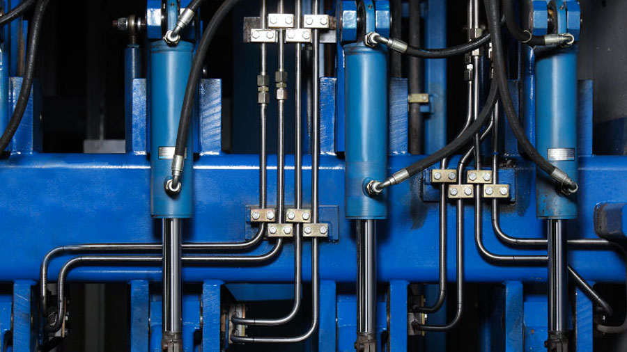

Подразделения
|
|
Кафедра «Строительство уникальных зданий и сооружений» |
|
Центр дополнительных профессиональных программ по направлению Строительство |
 |
Отделение «Строительные технологии и материалы» |
 |
Сектор исследовательской и публикационной активности студентов |
|
Сектор вычислительных средств |
 |
Редакция «Инженерно- строительного журнала» |
|
Базовая кафедра «Дороги,мосты и траспортные тоннели» на базе ЗАО «Институт Стройтрест» |
|
Международный научно-образовательный центр «Теплоснабжение, вентиляция и строительная теплотехника» |
|
Центр дополнительных профессиональных программ Инженерно-строительного института |
|
Научно-исследовательский отдел |
|
Кафедра «Водохозяйственное и гидротехническое строительство» |
|
Кафедра «Гражданское строительство и прикладная экология» |
|  |
Кафедра «Гидравлика и прочность» |
 |
Кафедра «Строительная механика и строительные конструкции» |